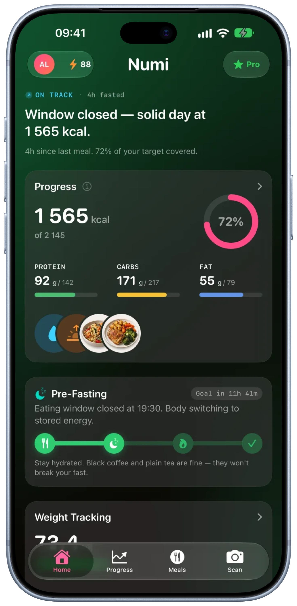
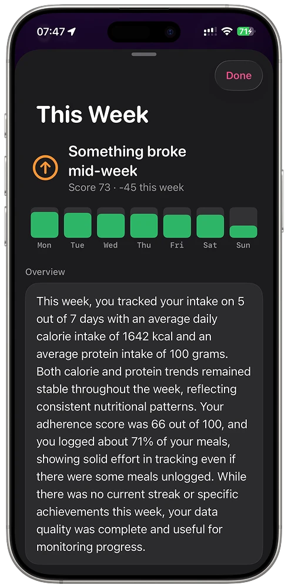
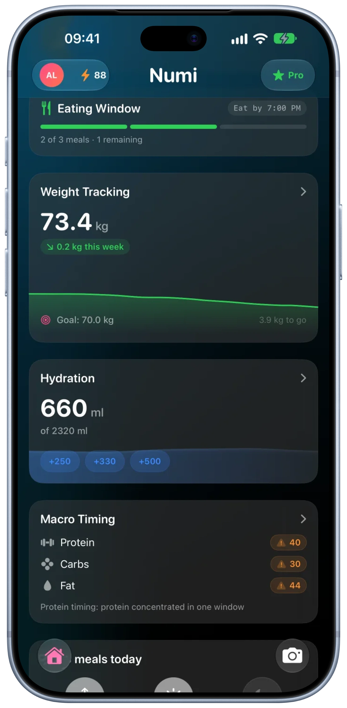
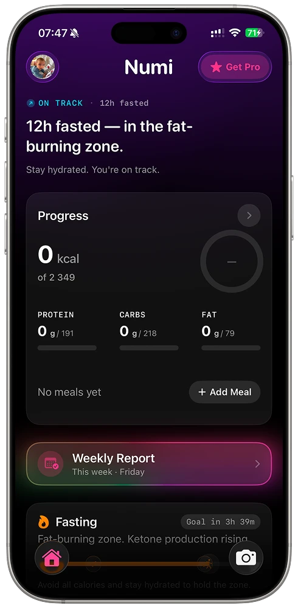

Numi makes logging a meal cost one photo.
A nutrition app that kills the tap-tap-tap of manual food logging. Snap a photo, get calories, macros and micronutrients back — and a coach that speaks in plain language, not spreadsheets.



01 — Overview
Most trackers ask you to search a database and do portion math three times a day. Numi’s bet is that the log has to disappear into a single tap — and that the numbers only matter if the app tells you what they mean.
- My role
- Founder · Design · Build
- Team
- Solo, with AI tooling
- Surfaces
- Logging · Insights · Fasting
- Core tech
- Vision AI · SwiftUI
- Status
- Live · in beta
02 — The problem
People don’t quit tracking because they stop caring. They quit because it’s work.
Every food diary starts the same way: motivated. Then real life hits — a rushed lunch, a shared plate, a dish with no barcode — and the friction compounds. Search, scroll, guess the grams, repeat. Within a couple of weeks most people just… stop.
So the real design problem was never “show more nutrition data.” It was protect the habit — make the first log of the day effortless, and make the data earn its place by changing what the person does next.
03 — Product thinking
Three bets the whole product leans on.
Logging must be a reflex
If capturing a meal costs more than a photo, the habit dies. The camera is the primary action, everywhere.
Numbers need a narrator
1,642 kcal means nothing on its own. Numi turns a week of data into a sentence you actually read.
Respect the whole day
Eating, fasting, weight and hydration live on one home — because they’re one story, not four apps.
04 — Who it’s for
Two people I kept designing for.
Personas drawn from Numi’s audience — and the design beliefs that shaped how it works.
The lapsed tracker
Has tried three other apps and abandoned each one around day 10. Will stay only if logging never feels like data entry. Success = still logging in week four.
The optimizer
Already disciplined; cares about macros, fasting windows and trends. Will stay if the insights are sharper than what a spreadsheet gives them.
- “
People don’t quit tracking because they stop caring — they quit because it’s work. Friction is the enemy, not willpower.
- “
Users don’t want more charts; they want to be told one thing — “are you on track or not.”
- “
The bar for effortless: even a complex, multi-item dish logs in under 10 seconds from a single photo.
05 — Key UX & UI decisions
Where the product thinking became pixels.
The camera is the front door
A persistent shutter button anchors the home screen. Tap it, point at the plate, and vision AI returns calories, macros and micronutrients — no search field, no portion slider. The plate becomes the input.
One glance, three rings
The home leads with protein, carbs and fat as color-coded rings over a filmstrip of today’s meals. No reading required — the shape of the day tells you if you’re on track before you’ve parsed a single number.
A weekly report that reads like a note
Instead of a wall of charts, Numi writes the week up in plain language — “something broke mid-week,” an adherence score, what to fix — backed by a simple seven-day bar. The AI does the interpreting so the user doesn’t have to.

Fasting on the same timeline
The eating window lives on the home, not in a separate app — with a plain-English state (“eating window closed, body switching to stored energy”) and gentle guidance. Tracking and fasting stop competing for attention.
06 — Design system
A dark canvas so the food pops.
Numi runs on a near-black surface: real meal photos and saturated macro gradients do the talking, while big numerals and generous rounded cards keep dense data calm. Every metric maps to a fixed hue — protein, carbs, fat, hydration — so color itself becomes a legend you learn once.
Component language
- Macro rings
- Meal filmstrip
- Insight cards
- Timeline / window
- Big-numeral stats
- Shutter FAB
- Plain-language states
- Tabbed home
Reusable tokens and components meant the whole app could stay consistent while shipping fast — one designer-engineer, one system, no drift between concept and build.
07 — Outcomes
What shipped.
Numi is live and in active beta — a few honest markers of where it stands.
08 — More